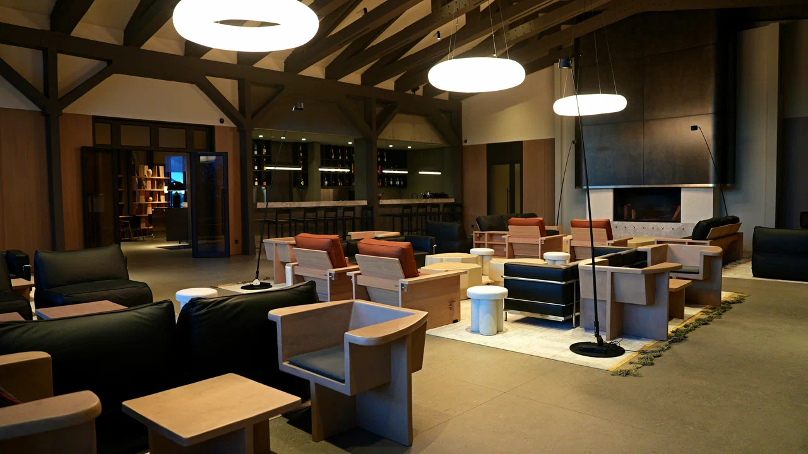
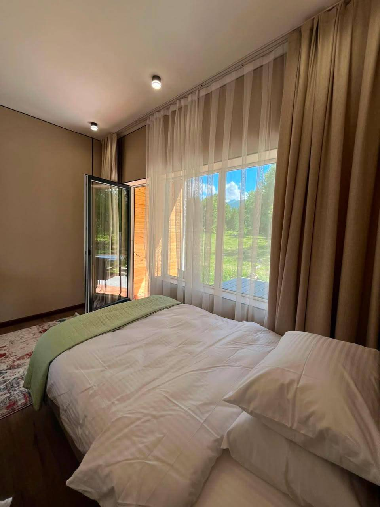
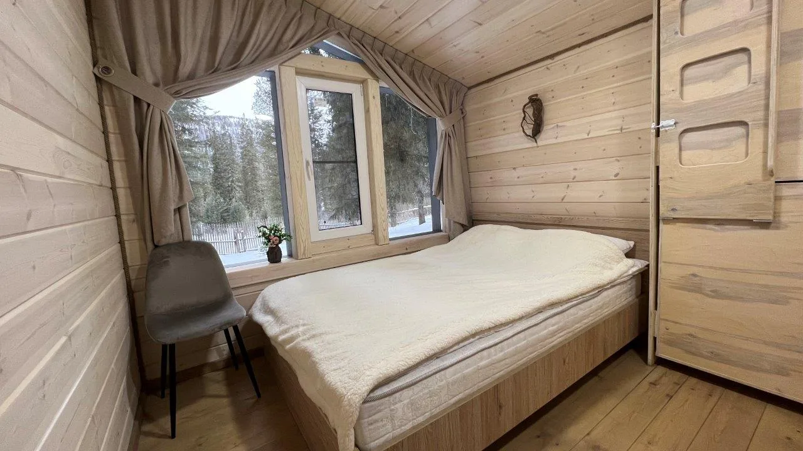
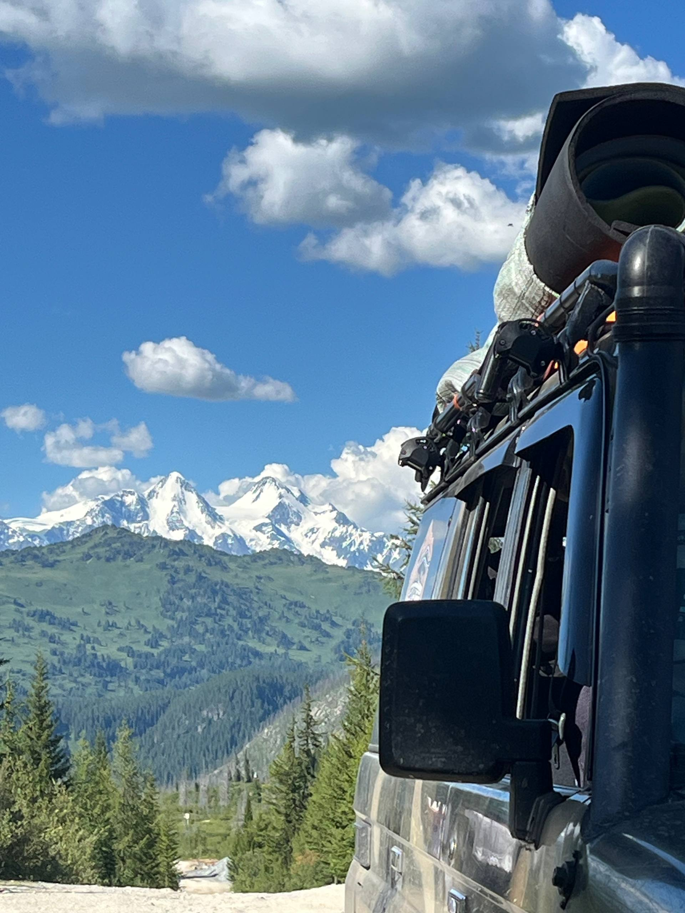

Май — октябрь
Лето
- Индивидуальные маршруты по всему Восточному Казахстану
- Катон-Карагай, Маркаколь, озеро Язёвое
- Однодневные джип-туры в горы из Риддера
- Рыбалка, сплавы, конные и пешие маршруты
Собираем поездку целиком: маршрут, транспорт, гиды, проживание, питание и пропуска. Летом — на внедорожниках по Алтаю, зимой — на ратраках и снегоходах. Встречаем в аэропорту Усть-Каменогорска и провожаем обратно.
Даты и цены зимних программ уточняются — напишите нам, пришлём, как только будут готовы.
Зимние программы →Каждая поездка — индивидуальная. Назовите даты и что для вас важно — пришлём программу по дням и стоимость.
Встреча в аэропорту, дорога в Алтай с остановками, заселение в отель в селе.
Утром конная прогулка и маральник, затем переезд к озеру. Дом на берегу и баня.
Рыбалка и SUP на озере, затем источники. Лодка к водопаду, по желанию — радоновые ванны.
Пеший маршрут на 3–4 часа с видом на Белуху. Вечер в Берели: стрельба из лука и баня.
Староавстрийская дорога — около шести часов горной грунтовки. Ужин у костра на озере.
Утро на Маркаколе, спуск в степь и глиняные каньоны. Вечер в Зайсане.
Ранний трансфер в аэропорт, на границу или к следующей точке вашего пути.
Горы, озёра, тайга, источники и пустыня за одну поездку.
Встречаем в аэропорту или на вокзале Усть-Каменогорска. После поездки отвозим туда же, на границу или в другой город.
Бронируем отели и гостевые дома на каждую ночь. Там, где жилья нет, ставим свой лагерь: палатки, кухня и снаряжение — наши.
Toyota Land Cruiser, Nissan Patrol и Tank, подготовленные для горных дорог. За рулём — гид, который ездит по этим маршрутам каждый сезон. До 4 гостей в машине.
Питание расписано в программе на каждый день. По маршруту добавляем рыбалку, конные прогулки, SUP, пешие выходы и баню.
Въезд в национальный парк и пропуск в пограничную зону оформляем сами. От вас нужны только копии паспортов — присылайте их сразу после брони.
Starlink и спутниковый телефон Thuraya там, где нет сети. Если погода закрывает перевал, у гида есть запасной маршрут.
Нужна только часть? Отели, трансферы, гида и пропуска можно заказать отдельно — под ваш собственный план поездки по Восточному Казахстану.
Отели и базы, где мы останавливались с гостями. В диких местах, где жилья нет, живём в своём лагере.






Напишите в WhatsApp, Telegram или через форму ниже. Отвечаем в течение часа в рабочее время.
Присылаем маршрут по дням с жильём, питанием и ценой. Правим, пока не подойдёт вашей группе.
Предоплата закрепляет даты и жильё. Способ оплаты согласуем с вами.
Встречаем и сопровождаем до самого отъезда.



Asferia Adventure — лицензированный туроператор из Риддера, Восточный Казахстан. С 2023 года возим гостей в горы Алтая: к озёрам, перевалам, водопадам и в национальные парки региона.
Мы организуем поездку целиком: гиды, подготовленные внедорожники, проживание у партнёров, трансферы, пропуска. Одна бронь — один контакт.
В однодневных турах — обеды от риддерского кафе «Крем», они входят в стоимость.

По всему Восточному Казахстану: Западный Алтай вокруг Риддера, Катон-Карагайский национальный парк, озёра Маркаколь и Язёвое, Рахмановские ключи, каньоны Киин-Кериш у Зайсана. База компании — в Риддере, в 120 км от Усть-Каменогорска.
Летний сезон — с конца мая по октябрь; высокогорье полностью открыто с середины июня до середины сентября. Зимние программы на ратраках и снегоходах идут с декабря по март.
Транспорт, гид, питание на маршруте и снаряжение для активностей. В многодневных программах — проживание по условиям конкретной поездки. Состав всегда расписан в программе, которую мы присылаем до оплаты.
Самолётом или поездом до Усть-Каменогорска. Оттуда забираем сами: трансфер включаем в программу или считаем отдельно для однодневных туров из Риддера.
Напишите нам даты и состав группы. Мы пришлём программу и цену; даты закрепляются предоплатой.
Напишите, когда хотите приехать и что для вас важно. Ответим в течение часа в рабочее время и пришлём программу с ценой.
«Пишите в любой мессенджер — отвечаю в течение часа в рабочее время».